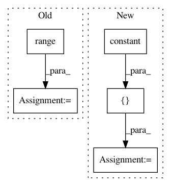

5cb43a9498315a16412cba20a59e6e76f9721b7b,capsulelayers.py,CapsuleLayer,call,#CapsuleLayer#Any#,94
Before Change
initializer=K.zeros([self.input_num_capsule, self.num_capsule, 1, self.dim_vector]))
// update self.bias by routing algorithm
for _ in range(self.num_routing):
c = K.softmax(self.bias)
c_expand = K.expand_dims(K.expand_dims(K.expand_dims(c, 2), 2), 0)
outputs = K.sum(c_expand * inputs_hat, [1, 3], keepdims=True)
outputs = squash(outputs)
K.update(self.bias, self.bias + K.sum(inputs_hat * outputs, [0, -2, -1]))
return K.reshape(outputs, [-1, self.num_capsule, self.dim_vector])
def compute_output_shape(self, input_shape):
return tuple([None, self.num_capsule, self.dim_vector])
After Change
return [i-1, b, outputs]
cond = lambda i, b, inputs_hat: i > 0
loop_vars = [K.constant(self.num_routing), self.bias, K.sum(inputs_hat, 1, keepdims=True)]
_, self.bias, outputs = tf.while_loop(cond, body, loop_vars)
// Routing algorithm V2. Seems not right. This may duplicate tensors by self.num_routing times.
for _ in range(self.num_routing):
In pattern: SUPERPATTERN
Frequency: 3
Non-data size: 5
Instances
Project Name: XifengGuo/CapsNet-Keras
Commit Name: 5cb43a9498315a16412cba20a59e6e76f9721b7b
Time: 2017-10-31
Author: guoxifeng1990@163.com
File Name: capsulelayers.py
Class Name: CapsuleLayer
Method Name: call
Project Name: tensorflow/tpu
Commit Name: 0638b9c86cfec273b2e5799aea281ffa74d9161d
Time: 2020-05-12
Author: pengchong@google.com
File Name: models/official/detection/serving/inputs.py
Class Name:
Method Name: raw_image_tensor_input
Project Name: NifTK/NiftyNet
Commit Name: a0f77cc8b87512e691a7c22b6fb9ba60f603b632
Time: 2017-07-04
Author: r.gray@ucl.ac.uk
File Name: layer/reparameterization_trick.py
Class Name: ReparameterizationLayer
Method Name: layer_op